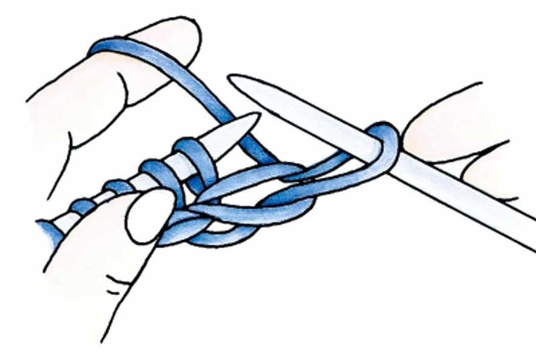
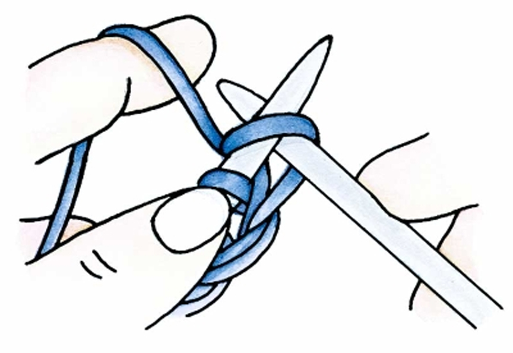

Step 1: Hold the yarn in your left hand about 8 inches from the end. With your right hand, make a circle with the yarn (fig. 1a). If it's helpful, hold the circle together between your index finger and thumb to prevent it from slipping away.
Step 2: With the working yarn behind the circle, insert the knitting needle through the circle from front to back and catch the working yarn, pulling it through the circle and forming a loop.
Step 3: With the new loop on the needle in your right hand, gently pull both yarns (the tail and the working yarn attached to the ball) beneath the needle, then pull on the working yarn to tighten the new loop so that it fits snuggly around the needle.
Step 1: Place the slipknot onto the needle held in your right hand, with the yarn tail in front (closest to you) and the working yarn (attached to the ball) behind the needle. Pull the working yarn taut over the left forefinger, and wrap the yarn tail around your thumb from front to back. Secure both the working yarn and the tail between the remaining 3 fingers of your left hand and the palm. Place the forefinger of your right hand on top of the slipknot to hold it in place.
Step 2: Insert the needle under the yarn in front of your thumb, working from front to back and pulling the yarn slightly upward. Insert the needle over the yarn on your forefinger, moving from top to bottom so the working yarn lies on top of the needle to form the new stitch.
Step 3: Pull the needle toward you through the loop on your thumb as you remove your thumb from the loop. At the same time, pull down on both pieces of yarn, tightening the stitch by pulling on the tail, keeping the stitch firm and even but still loose enough to slide easily.
Step 1: Hold the needle with the cast-on stitches in your left hand. The working yarn is already attached to the stitch closest to the needle tip. Hold the empty needle in your right hand; take hold of the working yarn with your right hand, and hold it behind the right needle. Insert the empty needle from front to back through the first stitch on the left needle (fig. 5a). The right needle is underneath the left needle.
Step 2: Bring your right hand and forefinger toward the tip of the right needle (the yarn is underneath the right needle). Wrap the yarn around the right needle from back to front (fig. 5b). Be careful not to wrap it around the left needle, too.
Step 3: Keeping the yarn firmly tensioned in your right hand, bring the right needle toward you, pulling a new loop through the old stitch With the new stitch on the right needle, slip the old stitch off the left needle Unlike the cast-on, the new knit stitches are held on the right needle.